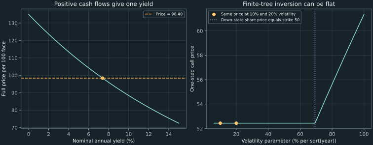

10. Financial equations as inverse problems
A five-year bond pays 3.5 every six months and returns face value 100 with its final coupon. Its quoted full price is 98.40. Which annual yield reproduces that price? A bracketed calculation gives approximately 7.3885493% under nominal annual yield with semiannual compounding. A second problem asks which volatility makes a specified 50-step option model return a price of 125; its answer is approximately 11.7165799% per square-root year. Both calculations find a zero of a price difference, but their uniqueness and interpretation require different assumptions.
The previous chapters took a rate or model parameter as input and returned a price. An inverse problem starts from a price and solves for a parameter inside that pricing map. A solver can narrow a parameter interval very accurately while leaving the model misspecified or the quote uncertain. We separate those issues before introducing faster root methods in Chapter 11.
Source spine: recording 29, nonlinear equations and yield to maturity and recording 30, implied volatility and bisection. Local existence/uniqueness proofs, the finite-tree nonidentification example, floating-point interface safeguards, and quote-uncertainty calculations are elaborations. Numerical examples are executed in the companion.
10.1 Fix the model before inverting its input Recording 29, 2:54
A bond's yield to maturity is a single rate that discounts its specified remaining payments to the observed full price under a stated compounding convention. It is not automatically a forecast of reinvestment returns, and it need not equal the discount rate for every maturity on a term structure. A curve can assign different discount factors to different payment dates; one yield compresses the bond's whole cash-flow schedule into one parameter.
For payments $c_k$ at times $k/m$ years and nominal annual yield $y$ compounded $m$ times per year, the pricing map is
\[ P(y)=\sum_{k=1}^{N}\frac{c_k}{(1+y/m)^k},\qquad y>-m. \tag{10.1} \]The admissible domain keeps the per-period accumulation factor positive. The running bond has annual coupon rate 7% on face 100, $m=2$, and $N=10$. Thus $c_1,\ldots,c_9=3.5$ and $c_{10}=103.5$. Assume settlement at a coupon date with these future payments remaining, and use full price 98.40; a clean quote requiring accrued-interest adjustment would define a different input account. The inverse equation is
\[ F(y)=\sum_{k=1}^{10}\frac{3.5}{(1+y/2)^k} +\frac{100}{(1+y/2)^{10}}-98.40=0. \tag{10.2} \]The principal appears once, as an addition to the final coupon. $F$ is a price residual in money per 100 face, while $y$ is an annual nominal rate. For example, a residual tolerance of $10^{-8}$ money units is not the same requirement as a yield interval of width $10^{-8}$. A generic root solver receives the residual function; the financial wrapper is responsible for the cash-flow and rate conventions.
Nonlinearity does not imply that no special case has a closed-form inverse. A zero-coupon bond with payment $L$ after $T$ years under annual effective yield satisfies $P=L/(1+y)^T$, giving $y=(L/P)^{1/T}-1$. General coupon schedules usually call for numerical inversion. The degree of a polynomial obtained by changing variables is not, by itself, a proof that every particular instance lacks a useful special formula.
10.2 Positive future cash flows identify one yield Recording 29, 10:21
Assume finitely many fixed payments $c_k\geq0$, with at least one strictly positive payment at a positive date. On $y>-m$, every discount factor in (10.1) is positive and smooth. Differentiating each term gives
\[ P'(y)=-\sum_{k=1}^{N}\frac{k}{m}\, c_k(1+y/m)^{-k-1}<0.\tag{10.3} \]Every summand inside the negative sign is nonnegative, and at least one is positive. Therefore the price is continuous and strictly decreasing on the domain. As $y\to\infty$, every term tends to zero, so $P(y)\to0$. As $y\downarrow-m$, a positive future-payment term diverges to infinity and the other terms cannot cancel it. Thus $P$ maps $(-m,\infty)$ continuously and strictly decreasingly onto $(0,\infty)$. For every positive observed full price there is exactly one yield in this domain.
The limits provide existence, while strict decrease provides uniqueness; one does not substitute for the other. Restricting the search further to $y\geq0$ changes the attainable price range to $(0,P(0)]$. For the running bond, $P(0)=135$. A positive price above 135 would imply a negative yield under these cash flows, rather than prove that the general yield equation lacks a solution. A zero or negative observed price is outside the range of this positive-payment model.
At the 7% nominal annual coupon rate, the running bond's price is 100. Its observed price 98.40 lies below that amount, so the unique nominal yield must exceed 7%. The executed answer, approximately $0.07388549298$, satisfies this direction check. It is nominal annual yield compounded semiannually; its annual effective counterpart would be $(1+y/2)^2-1$. Rate labels must accompany the number.
Signed cash flows can destroy uniqueness. Consider a separate annual-effective-yield problem: receive 230 in one year, pay 132 in two years, and set today's net price to 100. Then
\[ \frac{230}{1+y}-\frac{132}{(1+y)^2}=100 \quad\Longleftrightarrow\quad 100z^2-230z+132=100(z-1.1)(z-1.2)=0, \quad z=1+y.\tag{10.4} \]Both $y=0.1$ and $y=0.2$ solve it in the allowed domain. This is a net-payment stream, not the ordinary positive-coupon bond assumed in the theorem. Its residual is $-2$ at $y=0$ and approximately $-1.183431953$ at $y=0.3$, so the endpoints of that interval have the same sign even though two roots lie inside. Failure to find a sign-changing bracket is not, on its own, proof that no root exists.
10.3 Implied volatility belongs to a specified pricing map Recording 30, 0:16
Fix an option contract and the other model inputs. An implied volatility is a value $\sigma$ satisfying
\[ g(\sigma)=C_{\rm model}(\sigma;S_0,K,r,T,n)-C_{\rm quoted}=0. \tag{10.5} \]It is an inverse-model parameter, not a directly measured future volatility. The contract's exercise style, dividends, discounting, time-count convention, model family, and numerical resolution all affect the map being inverted. Matching a quote does not independently establish that the fitted model describes future stock returns.
The source illustrates a call with $S_0=24360$, $K=24400$, continuously compounded annual rate $r=0.065$, five days to expiration, $n=50$ steps, and a quoted price of 125. We reuse those declared numbers as a numerical fixture, not as independently authenticated historical NSE data or a current quote. Set $T=5/365$ years explicitly. For each trial $\sigma$, construct Chapter 8's CRR factors
\[ u=e^{\sigma\sqrt{T/n}},\quad d=u^{-1},\quad G=e^{rT/n},\quad q=\frac{G-d}{u-d},\tag{10.6} \]then roll back the call payoff. Admissibility requires $\sigma>|r|\sqrt{T/n}$ and finite representable factors; zero volatility is not handled by dividing through $u-d=0$. On the trial interval $[0.01,1]$, the computed endpoint call prices are 4.376663612 and 1124.550443588. Their residuals against 125 are approximately $-120.623336388$ and $999.550443588$. Thus the chosen interval actually brackets a matching value. A historical impression about usual market volatilities would not establish that fact.
The resulting midpoint is approximately $\sigma=0.1171657994$, or 11.7165799% per square-root year, with computed price residual approximately $1.773\times10^{-6}$. This reports a root compatible with the specified 50-step calculation and bracket. Refining the tree, changing the day count, using a dividend input, or inverting a different pricing model can change the fitted number. It is not justified to identify it automatically with an exchange's published IV, whose conventions would need separate verification.
Why a finite-tree IV need not be unique
The lecture motivates inversion by a strictly increasing volatility-to-price relationship. That conclusion needs a theorem for the particular pricing family and region. In a finite tree, even a simple call can be uninformative over a volatility interval. Consider a separate one-step CRR market with $S_0=100$, $K=50$, $r=0.05$, and $T=1$. For $0.05<\sigma<\log2$, strict no-arbitrage holds and both terminal stock prices exceed 50. The call payoff therefore equals $S_T-50$ in every modeled state. Replication gives
\[ C(\sigma)=100-50e^{-0.05}\approx52.438528775, \qquad 0.05<\sigma<\log2.\tag{10.7} \]The price is independent of $\sigma$ throughout that interval. The companion verifies identical values at 0.10 and 0.20 up to roundoff. A quote equal to (10.7) cannot select one of those volatilities. This is nonidentification in the model, not a failure that more root iterations can repair. A small computed price residual is not by itself a uniqueness certificate.

An implied-volatility curve plots fitted volatility against strike at a fixed expiry; repeating the calculation over expiries gives a surface. A U-shaped curve is called a volatility smile, while asymmetric patterns are often described as skew. The OIC overview of volatility skew illustrates several shapes. A varying fitted parameter means one constant parameter in the selected baseline model does not reproduce all those quotes simultaneously. It does not, by itself, identify a unique explanation such as investor beliefs, jumps, liquidity, or data error. The later curve-construction laboratory will keep the input quotes and conventions visible rather than treating a smooth drawing as evidence of a universally valid surface.
10.4 A sign-changing bracket is a conditional existence argument Recording 30, 8:09
Suppose a real function $f$ is continuous on a closed interval $[a,b]$ and its endpoint values have opposite signs. The intermediate value theorem guarantees at least one $x_*$ in the interval with $f(x_*)=0$. It does not guarantee only one. A strictly monotone pricing map supplies uniqueness separately, as the positive-cash-flow bond did; an algorithm's generic interface cannot manufacture it.
For the bond, $F(0)=135-98.40=36.60$ and $F(0.30)\approx42.284160803-98.40=-56.115839197$. Continuity and these opposite signs establish a root inside $[0,0.30]$. For the declared call fixture, the computed residuals at 0.01 and 1 have opposite signs as recorded above. On that admissible CRR interval, finite sums, exponentials, and the continuous positive-part payoff make the model price continuous; the positive $u-d$ and safe factor do not vanish there.
Check a bracket rather than naming two plausible parameter guesses. All function evaluations must use valid model inputs and return finite numbers. An invalid tree parameter, a singular rate, or a NaN is not one side of a sign change. Broad intervals such as “1% to 100% volatility” are not guaranteed by remembered market ranges. Conversely, a same-sign pair can miss a tangent root or two crossings, as (10.4) demonstrated.
Continuity is essential. Define $h(x)=-1$ for $x<0$ and $h(x)=1$ for $x\geq0$. Its values at $-1$ and 1 have opposite signs, yet it never equals zero. A bisection routine can shrink its interval around the jump and still have residual magnitude one. The companion includes this counterexample to show why a termination label cannot replace the caller's mathematical hypotheses.
In finite arithmetic, compare signs directly rather than multiplying $f(a)f(b)$. Products of large finite values can overflow; products of tiny values can underflow to zero and hide a strict sign change. After explicitly handling a computed endpoint zero, the Boolean comparison (fa > 0) != (fb > 0) tests opposite signs without forming a product. The SciPy bisection documentation likewise states continuity and opposite endpoint signs as input conditions. We use our own width-based implementation below and do not claim its stopping rule is the same as SciPy's absolute-plus-relative tolerance interface.
10.5 Bisect while preserving what the bracket proves Recording 30, 16:16
Maintain endpoints with opposite signs. Compute midpoint $m=(a+b)/2$ and evaluate $f(m)$. If its sign differs from $f(a)$, retain $[a,m]$; otherwise retain $[m,b]$. Continuity supplies at least one root in the retained half. This is the loop invariant: a root remains in the current closed bracket, and its endpoints retain a sign change unless an evaluated zero has ended the search.
In exact arithmetic, each nonterminal update halves the width. After $k$ halvings, an initial width $W_0=b_0-a_0$ becomes $W_k=W_0/2^k$. The midpoint estimate $m_k$ is at most half the current width from any root retained in that interval:
\[ |m_k-x_*|\leq W_k/2.\tag{10.8} \]To require bracket width at most $\varepsilon>0$, a sufficient number of halvings is
\[ k\geq\max\!\left(0,\left\lceil\log_2\frac{W_0}{\varepsilon}\right\rceil\right). \tag{10.9} \]If the requirement were instead midpoint error at most $\varepsilon$, the half-width in (10.8) would give a different stopping threshold. State which quantity the tolerance controls. With width tolerance $10^{-8}$, the bond's width 0.30 needs 25 halvings, while the IV interval's width 0.99 needs 27, absent earlier termination. A width-one interval also needs 27. The lecture's approximate iteration discussion should not replace these interval-specific counts.
| Bond halving | Trial yield | Price residual | Retained bracket |
|---|---|---|---|
| 1 | 0.15000 | −25.856323824 | [0, 0.15000] |
| 2 | 0.07500 | −0.453196813 | [0, 0.07500] |
| 3 | 0.03750 | 16.292627518 | [0.03750, 0.07500] |
| 4 | 0.05625 | 7.521032930 | [0.05625, 0.07500] |
At the second trial, the negative residual says the model price is below the target; since this bond price decreases with yield, the matching yield is smaller than 0.075. At the third trial the positive residual moves the lower endpoint upward. The generic algorithm uses signs rather than knowing whether a particular pricing function increases or decreases.
This complete miniature illustrates the invariant for prevalidated continuous finite-valued functions, finite ordered endpoints with strict opposite signs, and a positive attainable width tolerance. Its tiny demonstration solves $x^2-2=0$. The companion adds explicit validation, iteration and precision limits, and a full result record.
import math
def bisect_demo(function, a, b, width_tol):
fa = function(a)
while b - a > width_tol:
middle = a / 2 + b / 2
fm = function(middle)
if fm == 0:
return middle
if (fa > 0) != (fm > 0):
b = middle
else:
a, fa = middle, fm
return a / 2 + b / 2
def residual(x):
return x * x - 2
answer = bisect_demo(residual, 1.0, 2.0, 1e-8)
assert abs(answer - math.sqrt(2)) <= 0.5e-8
print(f"Square-root example: {answer:.9f}")
The complete bisect_width returns the midpoint, its computed residual, both endpoints and endpoint values, iteration and function-evaluation counts, and a stopping reason. It handles computed endpoint zeros, rejects nonfinite results and same-sign inputs, and requires a positive finite width tolerance. A maximum-iteration failure raises an error rather than masquerading as convergence. The midpoint uses halves of the endpoints to avoid overflowing their direct sum; if rounding leaves no representable interior midpoint while the requested width is unmet, the function raises a precision-limit error.
The actual bond result has bracket approximately $[0.07388548851,0.07388549745]$, midpoint $0.07388549298$, and computed residual $6.140\times10^{-7}$. It takes 25 halvings and 28 function evaluations, including the initial two endpoints and final midpoint residual. The IV result has bracket approximately $[0.11716579571,0.11716580309]$, 27 halvings, and 30 evaluations. Displayed interval endpoints are rounded here; the machine record uses their full floating values.
A computed zero at an endpoint or an in-loop midpoint ends the search with the reason evaluated_zero. If the width criterion is met first, the reason remains width_tolerance, even when the final midpoint residual happens to be zero. Neither label proves a mathematical exact root. The theorem's exact halving and error guarantee also assumes correct function signs; ordinary floating evaluations are not certified interval arithmetic. The implementation checks observed widths and exposes failures, while independent numerical checks establish the behavior of these moderate fixtures. It cannot certify continuity or uniqueness by sampling.
10.6 A small residual is not a complete accuracy statement
The residual $|P(\hat y)-P_{\rm quoted}|$ measures a price mismatch; the parameter error $|\hat y-y_*|$ measures a yield mismatch. To connect them, assume the exact price function is differentiable on an interval containing $\hat y$ and the matching yield $y_*$, and that $|P'(y)|\geq m>0$ throughout that interval. The mean value theorem supplies a point $\xi$ between them with
\[ P(\hat y)-P(y_*)=P'(\xi)(\hat y-y_*),\qquad |\hat y-y_*|\leq\frac{|P(\hat y)-P_{\rm quoted}|}{m}. \tag{10.10} \]Without a positive derivative lower bound, a tiny price residual can coexist with a large parameter uncertainty; the flat call example has no such bound at all. For the positive-payment bond, $-P'(y)$ decreases as yield increases, since every positive term in (10.3)'s magnitude decreases. Therefore a valid upper bracket endpoint $b$ gives the explicit bound $m=-P'(b)$ on that bracket. This is a local interval result, not an assertion that one derivative at one point controls every possible yield.
At the running solution, the computed slope is approximately $P'(y_*)=-407.775145738$ money per unit nominal annual yield. Implicit differentiation of $P(y_*)=P_{\mathrm{quoted}}$ gives $dy_*/dP_{\mathrm{quoted}}=1/P'(y_*)\approx-0.002452331905$. Thus a small price increase requires a yield decrease. The sign agrees with the monotonicity proof; the magnitude tells us how much precision in the quote is economically meaningful.
Reinvert prices 98.41 and 98.39 under the same cash flows. Their midpoint yield estimates are approximately 0.07386096865 and 0.07391001731. The resulting price-interval image is about 0.49049 basis points wide in nominal yield, where one basis point is $10^{-4}$ in rate units. The solver's width tolerance $10^{-8}$ is only 0.0001 basis point. Solving the same uncertain quote to many additional parameter digits would not remove this quote-induced interval. It is a deterministic sensitivity illustration, not a statistical confidence interval or an assertion about a particular market's tick size.
For the IV fixture, a centered price difference using volatility step $h=10^{-5}$ estimates the local slope as approximately 1138.631994 money per unit volatility. Dividing a hypothetical price change of 0.1 by that slope suggests a local volatility change of approximately 0.000087824688. This is a numerical linearization. It is not a proved uniform vega lower bound, and finite-tree payoff kinks or a different bump can affect such a derivative estimate. The later sensitivity and calibration chapters develop these distinctions further.
Separate three error sources: the root solver's remaining parameter interval, the numerical pricing model's resolution, and uncertainty or mismatch in its input quote and assumptions. Inverting a 50-step model very accurately only matches that model. A refined tree can require a different fitted parameter, and the finite-tree flat example may not identify one at all.
Each bisection step usually adds one function evaluation. With a pricing cost of $C_P$, the halving budget costs $O(C_P\log(W_0/\varepsilon))$, apart from initial/final evaluations. An $N$-payment bond evaluation costs $O(N)$; an $n$-step rolling lattice costs $O(n^2)$ for constant-time payoffs. This is why a “safe but slow” root method can be perfectly adequate for a cheap bond formula yet expensive around a large pricing engine. Faster updates in Chapter 11 will retain a bracket to preserve the useful guarantee.
10.7 What a calibrated number establishes
A computed root establishes compatibility with a declared pricing calculation to the recorded numerical tolerance and sign assumptions. It does not authenticate the quote, determine a unique parameter when the map is flat, reconstruct an entire yield curve from one coupon-bond yield, or validate a stochastic model against future data. The result record must travel with the cash flows, conventions, bracket, resolution, residual, and stopping reason. Chapter 11 uses derivatives and interpolation to accelerate the search while retaining this account of what has actually been established.
10.8 Exercises with worked solutions
Exercise 10.1: define the inverse before solving it
Write the running bond's cash-flow vector, residual, yield domain, and compounding convention. Explain what changes if a positive quoted full price exceeds 135.
Worked solution
The ten semiannual payments are nine amounts of 3.5 followed by 103.5. The nominal annual yield is $y$, with per-half-year factor $1+y/2$ and domain $y>-2$. The residual is $F(y)=\sum_{k=1}^{10}c_k(1+y/2)^{-k}-P_{\rm quoted}$. All payments are nonnegative and some are positive, so the derivative is strictly negative; limits at $-2$ and infinity are infinity and zero. Every positive price therefore has exactly one root on that domain. Since $P(0)=135$, a price above 135 requires a negative root. Searching only $[0,0.30]$ would then use the wrong admissible search restriction, even though the full yield equation remains solvable. Full price and the stated remaining payment dates must be used consistently.
Exercise 10.2: find two yields and a misleading endpoint test
For annual payments 230 then $-132$ and initial price 100, derive both yields. What do residual signs at 0 and 0.30 tell you about existence?
Worked solution
Set $z=1+y>0$ and multiply the inverse equation by $z^2$. It becomes $100z^2-230z+132=100(z-1.1)(z-1.2)=0$. Thus $y=0.1$ and $y=0.2$ are both allowed roots. The residual at 0 is $230-132-100=-2$; at 0.30 it is approximately $-1.183431953$. Equal signs prevent that pair from serving as a sign-changing bracket, but do not exclude the two interior roots. The positive-payment uniqueness theorem does not apply because the second future payment is negative.
Exercise 10.3: count the halvings with the right tolerance
Use bracket widths 0.30 and 0.99 and desired final width $10^{-8}$. Give the sufficient halving counts and the midpoint-error bound. Explain why a residual tolerance is a different instruction.
Worked solution
The counts are $\lceil\log_2(0.30/10^{-8})\rceil=25$ and $\lceil\log_2(0.99/10^{-8})\rceil=27$. After those halvings, the midpoint is within half the respective final width of any retained root in exact arithmetic with reliable signs. Width at most $10^{-8}$ therefore implies midpoint error at most $0.5\times10^{-8}$, not a currency residual of that magnitude. A price residual must be related to parameter error through derivative information such as (10.10), and quote uncertainty is a further issue. An earlier computed zero can shorten a particular run; the stated counts are width guarantees under the theorem's assumptions.
Exercise 10.4: the same price at two volatilities
Use $S_0=100,K=50,r=0.05,T=1$ in a one-step CRR model. Show why volatilities 0.10 and 0.20 give the same call value. Would returning one of them establish that it is the unique IV?
Worked solution
Both volatility values exceed the no-arbitrage threshold 0.05 and are below $\log2$. Hence the down price $100e^{-\sigma}$ still exceeds 50, and the up price also exceeds 50. The call is the affine terminal claim $S_T-50$. A long share and borrowing the present value of 50 reproduce it, giving $C=100-50e^{-0.05}\approx52.438528775$ for both volatilities and the entire interval between them. Returning a matching parameter demonstrates compatibility only. The quote does not identify one volatility in this flat region, so uniqueness would be false.
Exercise 10.5: compare quote precision with solver precision
For the running bond, use local slope approximately $-407.775145738$ and the reinverted 98.39–98.41 price interval. What does the resulting yield range say about asking for many more root digits? State a condition that would turn a price residual into a rigorous local parameter bound.
Worked solution
The local inverse slope is approximately $-0.002452331905$ yield units per money unit, so higher price gives lower yield. Direct reinversion gives midpoint yields approximately 0.07386096865 at 98.41 and 0.07391001731 at 98.39, a span of about 0.49049 basis points. The root width tolerance $10^{-8}$ is 0.0001 basis point, much smaller than that quote-induced span. Additional solver digits would refine the chosen input quote's inverse, not eliminate the uncertainty represented by the price interval. If the true root and estimate lie in an interval where $P$ is differentiable and $|P'|\geq m>0$, the mean value theorem gives parameter error at most price residual divided by $m$. A single small residual without that lower bound supplies no such conclusion.
Exercise 10.6: a shrinking bracket around no root
Take $h(x)=-1$ below zero and $h(x)=1$ at or above zero, starting from $[-1,1]$. Which bisection hypothesis fails? What should a numerical report retain so that a narrow final interval is not mistaken for a verified root?
Worked solution
The endpoints have opposite signs and all evaluated values are finite, but $h$ is discontinuous at zero and has no zero anywhere. Bisection repeatedly retains a sign-changing interval containing the jump. A width-based implementation can stop with residual magnitude one; this does not contradict the intermediate value theorem because continuity was absent. The report should retain the bracket, residual, endpoint values, stopping reason, and model hypotheses rather than return only a number labeled “the root.” Input checks cannot certify continuity by finitely many samples. This example also explains why zero-width or small-width claims must be read with their mathematical assumptions.
Primary sources and reproducibility
The timestamped recordings motivate the two inverse problems and the bracket-halving algorithm. Their market-number illustration is used as a declared fixture, without asserting a verified historical exchange quote or an exchange's IV conventions. The yield proof, signed-payment and flat-IV counterexamples, numerical reporting rules, and uncertainty calculations are local elaborations.
- SciPy, bisect documentation: continuity and opposite-sign requirements, stopping parameters, iteration limit, and result reporting. Our implementation uses an explicitly different absolute bracket-width stopping rule; SciPy is not required or reported executed.
- OIC, Volatility Skew and Options: An Overview, October 2023: terminology for strike-dependent IV curves and differing shapes. The chapter draws no current-market conclusion from that explanatory article.
- Chapter 8's derived finite-market model and its linked Cox–Ross–Rubinstein primary manuscript supply the forward lattice being inverted. Numerical inversion does not add a model-validation theorem.
Run python code/ch10_inverse_pricing.py, keeping its sibling Chapter 8 module. The program reports brackets, residuals and counts; independently checks a zero-coupon inverse and square-root example; and executes quote, identification, and continuity counterexamples. The embedded Python miniature is executed separately. Regenerate both figures with python figures/ch10_inverse_maps.py using the pinned dependencies. These are ordinary floating-point checks of moderate inputs, not interval-certified function evaluation.